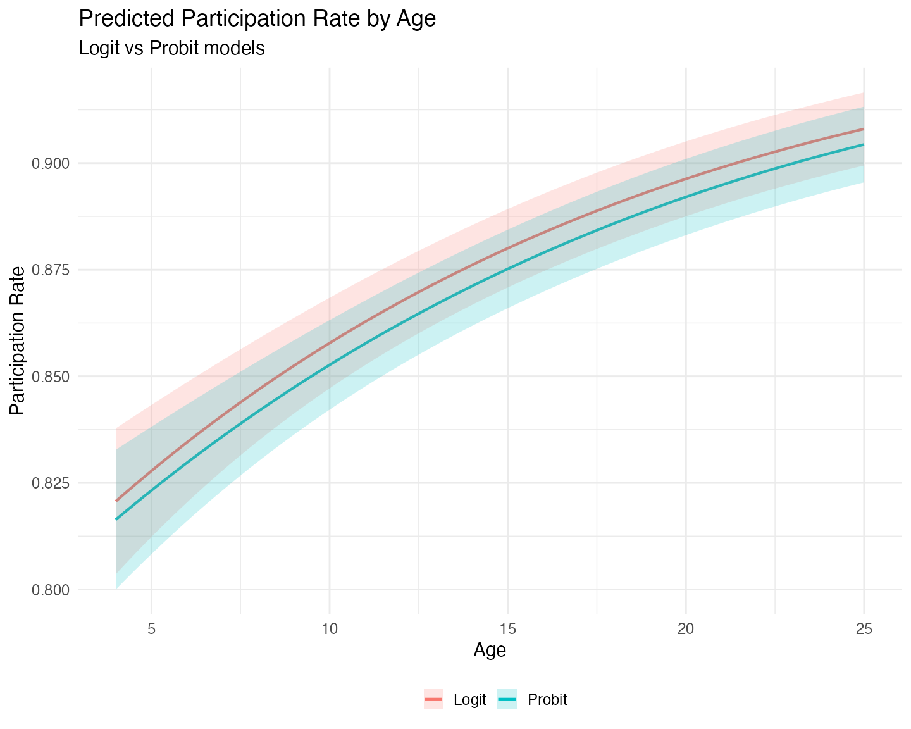
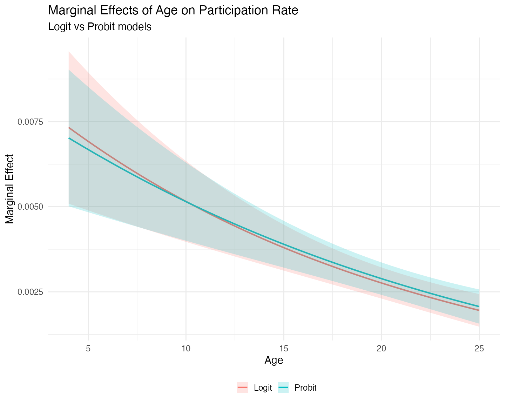
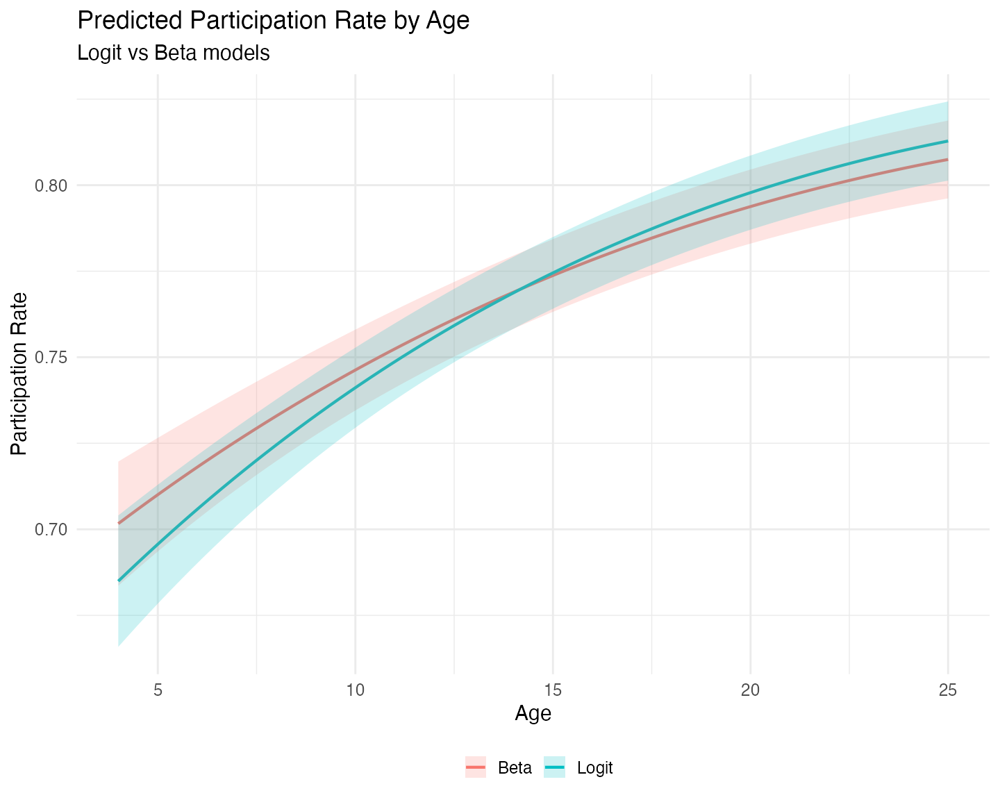
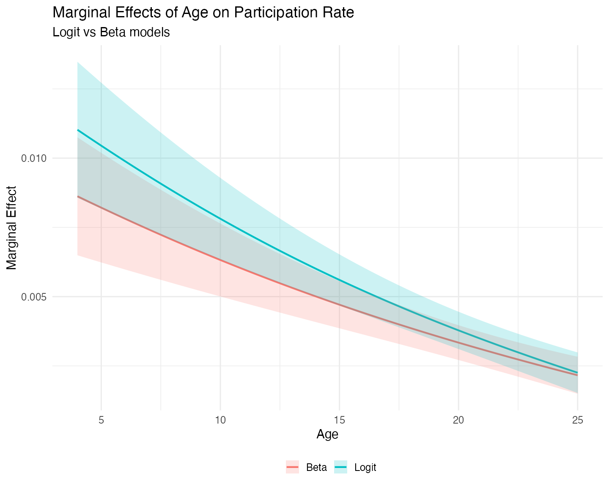

mlmodels-fractional.Rmd
library(mlmodels)
library(marginaleffects)
library(dplyr)
#>
#> Attaching package: 'dplyr'
#> The following objects are masked from 'package:stats':
#>
#> filter, lag
#> The following objects are masked from 'package:base':
#>
#> intersect, setdiff, setequal, union
library(ggplot2)Fractional response variables – outcomes that take values in the unit interval [0, 1] – are common in applied research. Examples include employment rates, participation rates in pension plans, debt-to-asset ratios, and market shares. Modeling these variables correctly is challenging because they are bounded and often exhibit heteroskedasticity that depends on the conditional mean.
Ordinary least squares (OLS) is invalid in this setting. Not only are
the predicted values not constrained to the unit interval, but the
assumption of constant variance is clearly violated. Moreover, the
linear functional form is typically misspecified for a bounded dependent
variable. Before Papke and Wooldridge (1996), a common practice was to
apply a log-odds transformation, log(y/(1-y)), and estimate
the model by OLS. This approach has two serious drawbacks. First, it is
undefined when the outcome takes values of 0 or 1. Second, even when it
can be computed, recovering predicted values or marginal effects on the
original scale of y requires complex nonlinear
re-transformation of the parameters.
When boundary values were present, researchers sometimes turned to Berkson’s minimum chi-square estimator. However, this method is not valid when the observed proportions are themselves continuous (or derived from continuous underlying variables), which is the typical case in modern microeconomic data.
These limitations motivated the search for better estimators. Papke and Wooldridge (1996) showed that quasi-maximum likelihood estimation (QMLE) based on the logistic (logit) or standard normal (probit) cumulative distribution function provides consistent estimates of the conditional mean parameters, even though the data are fractional and the Bernoulli variance assumption is generally incorrect. Because the information matrix identity does not hold, robust (sandwich) standard errors are required for valid inference.
When the outcome is strictly fractional (no observations at 0 or 1),
the Beta regression model becomes an attractive
alternative. It provides a full maximum likelihood estimator under the
assumption that y follows a Beta distribution, which is
often more efficient than the quasi-likelihood approach. However, like
the log-odds transformation, the Beta model is undefined at the
boundaries and automatically drops observations with y = 0
or y = 1.
This potential gain in efficiency comes at a cost: the Beta model is not robust to distributional misspecification. If the Beta distributional assumption fails, the estimator can easily become inconsistent for the parameters of interest.
This vignette compares these three approaches — logit and probit QMLE (which can handle boundary values) and Beta MLE (which cannot) — using the classic 401(k) participation data from Papke and Wooldridge (1996).
When the fractional outcome contains observations at the boundaries (exactly 0 or 1), the Beta model is no longer feasible, since it is only defined on the open interval (0, 1). In these cases, the quasi-maximum likelihood (QMLE) framework proposed by Papke and Wooldridge (1996) becomes the preferred approach.
The central insight of Papke and Wooldridge is that we can treat the observed fraction as if it were a Bernoulli outcome for the purpose of estimating the conditional mean, even though the data are aggregated proportions. Both the logistic (logit) and standard normal (probit) cumulative distribution functions ensure that predicted values lie naturally within the unit interval [0, 1]. Under correct specification of the linear index, the resulting estimators are consistent for the parameters of the conditional mean, regardless of the true conditional variance.
However, because the implicit Bernoulli variance assumption is
usually incorrect for fractional data, the information matrix identity
does not hold. Consequently, standard errors based on the observed
information matrix (oim) or outer product of gradients
(opg) are generally invalid. Robust (sandwich)
standard errors are essential for reliable inference.
The mlmodels package supports fractional responses in
both ml_logit() and ml_probit(). In addition,
we automatically warn users when they attempt post-estimation inference
using oim or opg standard errors on fractional
outcomes. For a detailed discussion of the different variance-covariance
estimators available, see the vignette Variance-Covariance Estimation in
mlmodels.
We illustrate this approach using the full 401(k) participation
dataset from Papke and Wooldridge (1996), which includes observations at
both 0 and 1. We estimate their preferred specification (Table III,
column 4), which includes quadratic terms in mrate,
log(totemp), and age.
data("pw401k")
# Store formula for multiple use
form_full <- prate ~ mrate + I(mrate^2) +
log(totemp) + I(log(totemp)^2) +
age + I(age^2) + sole
# Estimation
logit_full <- ml_logit(form_full, data = pw401k)
probit_full <- ml_probit(form_full, data = pw401k)
# Display the results
summary(logit_full, vcov.type = "robust")
#>
#> Maximum Likelihood Model
#> Type: Homoskedastic Fractional Response Logit
#> ---------------------------------------
#> Call:
#> ml_logit(value = prate ~ mrate + I(mrate^2) + log(totemp) + I(log(totemp)^2) +
#> age + I(age^2) + sole, data = pw401k)
#>
#> Log-Likelihood: -1713.09
#>
#> Wald significance tests:
#> all: Chisq(7) = 880.958, Pr(>Chisq) = < 1e-8
#>
#> Variance type: Robust
#> ---------------------------------------
#> Estimate Std. Error z value Pr(>|z|)
#> Value (prate):
#> value::(Intercept) 5.10529 0.41569 12.281 < 2e-16 ***
#> value::mrate 1.66502 0.10425 15.972 < 2e-16 ***
#> value::I(mrate^2) -0.33209 0.02564 -12.951 < 2e-16 ***
#> value::log(totemp) -1.03058 0.10972 -9.393 < 2e-16 ***
#> value::I(log(totemp)^2) 0.05363 0.00707 7.587 3.27e-14 ***
#> value::age 0.05482 0.00770 7.123 1.05e-12 ***
#> value::I(age^2) -0.00063 0.00018 -3.557 0.000375 ***
#> value::sole 0.06425 0.04984 1.289 0.197305
#> ---------------------------------------
#> Signif. codes: 0 '***' 0.001 '**' 0.01 '*' 0.05 '.' 0.1 ' ' 1
#> ---
#> Number of observations:4734 (Successes: 4116.51, Failures: 617.4899)
#> Pseudo R-squared - Cor.Sq.: 0.1971 McFadden: 0.06546
#> AIC: 3442.17 BIC: 3493.87
summary(probit_full, vcov.type = "robust")
#>
#> Maximum Likelihood Model
#> Type: Homoskedastic Fractional Response Probit
#> ---------------------------------------
#> Call:
#> ml_probit(value = prate ~ mrate + I(mrate^2) + log(totemp) +
#> I(log(totemp)^2) + age + I(age^2) + sole, data = pw401k)
#>
#> Log-Likelihood: -1712.98
#>
#> Wald significance tests:
#> all: Chisq(7) = 891.991, Pr(>Chisq) = < 1e-8
#>
#> Variance type: Robust
#> ---------------------------------------
#> Estimate Std. Error z value Pr(>|z|)
#> Value (prate):
#> value::(Intercept) 2.843323 0.220391 12.901 < 2e-16 ***
#> value::mrate 0.854405 0.053175 16.068 < 2e-16 ***
#> value::I(mrate^2) -0.171649 0.013210 -12.994 < 2e-16 ***
#> value::log(totemp) -0.551960 0.058621 -9.416 < 2e-16 ***
#> value::I(log(totemp)^2) 0.028701 0.003788 7.577 3.53e-14 ***
#> value::age 0.029139 0.003985 7.313 2.61e-13 ***
#> value::I(age^2) -0.000339 0.000091 -3.737 0.000186 ***
#> value::sole 0.045994 0.026419 1.741 0.081696 .
#> ---------------------------------------
#> Signif. codes: 0 '***' 0.001 '**' 0.01 '*' 0.05 '.' 0.1 ' ' 1
#> ---
#> Number of observations:4734 (Successes: 4116.51, Failures: 617.4899)
#> Pseudo R-squared - Cor.Sq.: 0.1966 McKelvey & Zavoina: 0.1438
#> AIC: 3441.95 BIC: 3493.65Our estimates from the fractional response logit model match those
reported in the original paper (after accounting for rounding). For
example, the coefficient on log(totemp) is
-1.03058 in our logit model, which rounds to
-1.031 or -1.030 depending on the convention
used. All other coefficients and robust standard errors align with the
published results.
It is worth noting that the logit and probit coefficients are not directly comparable due to the different scaling of the underlying latent variable (logistic variance ≈ 3.29 versus standard normal variance = 1). What is comparable – and more relevant for interpretation – are the predicted participation rates and marginal effects. We turn to these next.
To compare the substantive implications of the two models, we compute
predicted participation rates and the marginal effect of
age across a range of values, using functions from the
marginaleffects package. We evaluate the predictions and
marginal effects for both models at the mean values of all other
covariates.
In the data, age represents the number of years that the
pension plan has been in place at the company. Looking at the summary
statistics we see that the minimum is 4 years, the 3rd quartile is 17
years, and the maximum is 76 years. For our range of values we select,
then, values that are representative for most of the distribution, and
make age range from 4 to 25 years.
# Grid focused on the main mass of the data (covers up to ~Q3 + a bit)
# You can pass either fitted model in `model`.
newdata <- datagrid(model = logit_full,
age = seq(4, 25, length.out = 80),
FUN = mean)
# Predictions (participation rate)
pred_logit <- predictions(logit_full, newdata = newdata, vcov = "robust")
pred_probit <- predictions(probit_full, newdata = newdata, vcov = "robust")
# Marginal effects of age
me_logit <- slopes(logit_full, variables = "age", newdata = newdata, vcov = "robust")
me_probit <- slopes(probit_full, variables = "age", newdata = newdata, vcov = "robust")We now plot the predicted participation rates:
# Form Long dataset with both predictions and factor variable Model.
probs <- bind_rows(
pred_logit |> mutate(Model = "Logit"),
pred_probit |> mutate(Model = "Probit")
)
ggplot(probs, aes(x = age, y = estimate, color = Model, fill = Model)) +
geom_line(linewidth = 1) +
geom_ribbon(aes(ymin = conf.low, ymax = conf.high), alpha = 0.2, color = NA) +
labs(title = "Predicted Participation Rate by Age",
subtitle = "Logit vs Probit models",
x = "Age",
y = "Participation Rate",
color = "",
fill = "") +
theme_minimal(base_size = 15) +
theme(legend.position = "bottom")
The logit model consistently predicts higher participation
rates than the probit model. We also observe that the logit
model exhibits greater uncertainty at low plan ages,
visible in the wider confidence bands on the left side of the graph.
This pattern is typical because the logistic distribution has heavier
tails than the standard normal. If we had extended the grid to the upper
limits of age, we would likely have observed wider
uncertainty there as well.
Turning to marginal effects:
mes <- bind_rows(
me_logit |> mutate(Model = "Logit"),
me_probit |> mutate(Model = "Probit")
)
ggplot(mes, aes(x = age, y = estimate, color = Model, fill = Model)) +
geom_line(linewidth = 1) +
geom_ribbon(aes(ymin = conf.low, ymax = conf.high), alpha = 0.2, color = NA) +
labs(title = "Marginal Effects of Age on Participation Rate",
subtitle = "Logit vs Probit models",
x = "Age",
y = "Marginal Effect",
color = "",
fill = "") +
theme_minimal(base_size = 15) +
theme(legend.position = "bottom")
The marginal effect of plan age on participation is positive but declining in both models. The two curves cross around 11 years – before the mean plan age (13.14). At very young plans, the logit model implies a stronger positive effect of age. After the crossing point, the probit model shows a slightly larger marginal effect. However, the differences between the two models are not significant, both statistically and practically.
To provide a comparison between all estimators, we now are going to estimate a fractional response logit model and a beta model, on only those observations that are between 0 and 1 – strict fractional responses. The reason is that when the data shows this type of fractional responses the Beta model becomes attractive because of its usual superior efficiency, as long as the distributional assumption is correct.
# There are no outcomes at 0, only at 1. Subset accordingly
logit_frac <- ml_logit(form_full, data = pw401k, subset = prate < 1)
beta_frac <- ml_beta(form_full, data = pw401k, subset = prate < 1)
#> ℹ Improving initial values by scaling (factor = 0.5).
#> ℹ Initial log-likelihood: -311.974
#> ℹ Final scaled log-likelihood: 79.945
summary(logit_frac, vcov.type = "robust")
#>
#> Maximum Likelihood Model
#> Type: Homoskedastic Fractional Response Logit
#> ---------------------------------------
#> Call:
#> ml_logit(value = prate ~ mrate + I(mrate^2) + log(totemp) + I(log(totemp)^2) +
#> age + I(age^2) + sole, data = pw401k, subset = prate < 1)
#>
#> Log-Likelihood: -1426.29
#>
#> Wald significance tests:
#> all: Chisq(7) = 352.993, Pr(>Chisq) = < 1e-8
#>
#> Variance type: Robust
#> ---------------------------------------
#> Estimate Std. Error z value Pr(>|z|)
#> Value (prate):
#> value::(Intercept) 3.51819 0.35290 9.969 < 2e-16 ***
#> value::mrate 0.81486 0.09870 8.256 < 2e-16 ***
#> value::I(mrate^2) -0.20171 0.02533 -7.963 1.68e-15 ***
#> value::log(totemp) -0.70323 0.09483 -7.416 1.21e-13 ***
#> value::I(log(totemp)^2) 0.03762 0.00614 6.124 9.10e-10 ***
#> value::age 0.05800 0.00618 9.388 < 2e-16 ***
#> value::I(age^2) -0.00086 0.00014 -6.186 6.17e-10 ***
#> value::sole -0.19903 0.04011 -4.962 6.99e-07 ***
#> ---------------------------------------
#> Signif. codes: 0 '***' 0.001 '**' 0.01 '*' 0.05 '.' 0.1 ' ' 1
#> ---
#> Number of observations:2711 (Successes: 2093.51, Failures: 617.4899)
#> Pseudo R-squared - Cor.Sq.: 0.1434 McFadden: 0.01949
#> AIC: 2868.57 BIC: 2915.81
summary(beta_frac, vcov.type = "robust")
#>
#> Maximum Likelihood Model
#> Type: Homoskedastic Beta Model
#> ---------------------------------------
#> Call:
#> ml_beta(value = prate ~ mrate + I(mrate^2) + log(totemp) + I(log(totemp)^2) +
#> age + I(age^2) + sole, data = pw401k, subset = prate < 1)
#>
#> Log-Likelihood: 1677.81
#>
#> Wald significance tests:
#> all: Chisq(7) = 351.410, Pr(>Chisq) = < 1e-8
#>
#> Variance type: Robust
#> ---------------------------------------
#> Estimate Std. Error z value Pr(>|z|)
#> Value (prate):
#> value::(Intercept) 2.99043 0.32638 9.162 < 2e-16 ***
#> value::mrate 0.90356 0.09600 9.412 < 2e-16 ***
#> value::I(mrate^2) -0.21881 0.02716 -8.057 7.80e-16 ***
#> value::log(totemp) -0.57702 0.08733 -6.608 3.91e-11 ***
#> value::I(log(totemp)^2) 0.03076 0.00564 5.455 4.89e-08 ***
#> value::age 0.04639 0.00557 8.332 < 2e-16 ***
#> value::I(age^2) -0.00065 0.00012 -5.229 1.70e-07 ***
#> value::sole -0.10352 0.04001 -2.587 0.00968 **
#> Scale (log(phi)):
#> scale::lnphi 1.87118 0.03502 53.429 < 2e-16 ***
#> ---------------------------------------
#> Signif. codes: 0 '***' 0.001 '**' 0.01 '*' 0.05 '.' 0.1 ' ' 1
#> ---
#> Number of observations:2711 Deg. of freedom: 2703
#> Pseudo R-squared - Cor.Sq.: 0.1051
#> AIC: -3337.62 BIC: -3284.48
#> Precision Param.: 6.50You may have noticed that the log-likelihood for the Beta model is positive (approximately +1677.81 in this estimation). This is perfectly normal and does not indicate any problem.
The Beta distribution is defined only on the open interval (0, 1).
When the precision parameter phi is large – here we
estimate phihat ≈ 6.50 – the density can exceed 1 near the
boundaries. As a result, the log-density for many observations is
positive, and the overall log-likelihood can easily be positive as
well.
In contrast, the logit and probit models are based on a quasi-likelihood approach and typically produce negative log-likelihood values. Because of these differences in scale, the log-likelihood (and therefore AIC and BIC) are directly comparable between logit and probit, but not with the Beta model.
We also shouldn’t be tempted to compare the z-statistics directly, because they are not strictly comparable across models. The z-value depends on both the magnitude of the coefficient and its standard error. While the Beta model is generally more efficient when its distributional assumption holds (producing smaller standard errors on average), the coefficients themselves also differ in scale and interpretation between the logit and beta specifications. As a result, some coefficients may show higher z-values in the Beta model, while others show lower ones.
Like before, we can compare their predictions and marginal effects. We follow the same methodology as before, but we calculate a new grid, so that the means can be calculated on the reduced sample:
# New grid to recalculate the means to the reuced sample.
newdata <- datagrid(model = logit_frac,
age = seq(4, 25, length.out = 80),
FUN = mean)
# Predictions (participation rate)
pred_logit <- predictions(logit_frac, newdata = newdata, vcov = "robust")
pred_beta <- predictions(beta_frac, newdata = newdata, vcov = "robust")
# Marginal effects of age
me_logit <- slopes(logit_frac, variables = "age", newdata = newdata, vcov = "robust")
me_beta <- slopes(beta_frac, variables = "age", newdata = newdata, vcov = "robust")Let us compare the predited participation rates:
probs <- bind_rows(
pred_logit |> mutate(Model = "Logit"),
pred_beta |> mutate(Model = "Beta")
)
ggplot(probs, aes(x = age, y = estimate, color = Model, fill = Model)) +
geom_line(linewidth = 1) +
geom_ribbon(aes(ymin = conf.low, ymax = conf.high), alpha = 0.2, color = NA) +
labs(title = "Predicted Participation Rate by Age",
subtitle = "Logit vs Beta models",
x = "Age",
y = "Participation Rate",
color = "",
fill = "") +
theme_minimal(base_size = 15) +
theme(legend.position = "bottom")
On the reduced sample of strictly fractional responses
(0 < prate < 1), the predicted participation rates
from the logit and Beta models are quite close across the range of plan
age. The Beta model does not show a dramatic gain in precision or
efficiency in this particular application. While the Beta distribution
can sometimes provide more efficient estimates when its assumptions
hold, the quasi-likelihood logit model remains competitive and is often
preferred when robustness to distributional misspecification is a
concern.
We now turn to the marginal effects:
mes <- bind_rows(
me_logit |> mutate(Model = "Logit"),
me_beta |> mutate(Model = "Beta")
)
ggplot(mes, aes(x = age, y = estimate, color = Model, fill = Model)) +
geom_line(linewidth = 1) +
geom_ribbon(aes(ymin = conf.low, ymax = conf.high), alpha = 0.2, color = NA) +
labs(title = "Marginal Effects of Age on Participation Rate",
subtitle = "Logit vs Beta models",
x = "Age",
y = "Marginal Effect",
color = "",
fill = "") +
theme_minimal(base_size = 15) +
theme(legend.position = "bottom")
The marginal effect of plan age on participation is positive but declining in both models, as expected given the quadratic specification. The two curves cross (or come very close to crossing) around age 25, the right limit of our grid. At very young plans the Beta model implies a stronger positive effect of age, while at older plans the logit model shows a slightly larger marginal effect.
Interestingly, the confidence intervals for both models are narrowest around age 21–23, well beyond the mean plan age of 12.07 years in the reduced sample. This occurs because the quadratic term in the model shifts the region of lowest uncertainty to the right.
Overall, the differences between the logit and Beta models are modest in this application.
The mlmodels package provides three estimators for
fractional response outcomes:
ml_logit() and ml_probit() – These
quasi-maximum likelihood estimators (QMLE) are
consistent for the conditional mean even when the outcome includes
boundary values (0 or 1). Because the implicit Bernoulli variance is
usually incorrect, robust standard errors are strongly
recommended.ml_beta() — This is a full maximum likelihood estimator
that is typically more efficient when the outcome is strictly fractional
(values strictly between 0 and 1) and the Beta distributional assumption
holds reasonably well. However, it is not valid when the outcome
includes boundary values, and ml_beta() automatically drops
them.In this vignette we compared these approaches using the classic 401(k) participation data from Papke and Wooldridge (1996).
When boundary values are present, both logit and probit produce very similar predicted participation rates and marginal effects. The logit model tends to show slightly wider uncertainty in the tails, but overall the substantive conclusions from the two models are nearly identical.
On the strictly fractional subsample, the Beta and logit models again
yield very similar predictions and marginal effects. While the Beta
model can be more efficient when its distributional assumption is
appropriate, we did not observe a dramatic gain in this application –
partly because we used robust standard errors for both models. When the
researcher is confident in the Beta assumption, model-based
(oim) standard errors can be used and will often be more
precise.
Ultimately, mlmodels gives you flexible, well-documented
tools to choose the most appropriate model for your data and research
goals – whether you need robustness to boundary values
(ml_logit/ml_probit) or potential efficiency
gains under stricter assumptions (ml_beta).
Happy modeling!
Papke, L. E., & Wooldridge, J. M. (1996). “Econometric methods for fractional response variables with an application to 401(k) plan participation rates.” Journal of Applied Econometrics, 11(6), 619–632. https://doi.org/10.1002/(SICI)1099-1255(199611)11:6<619::AID-JAE418>3.0.CO;2-1